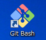
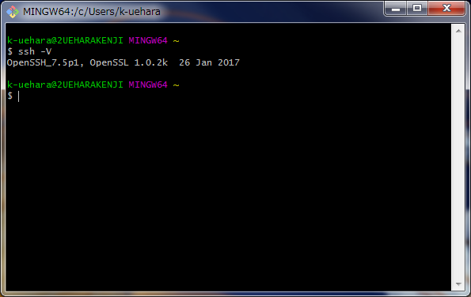

SSHとは
SSHはSecure SHellの略である。
- サーバーをリモートで操作できる。
- SSHはプロトコルの一種である。
- セキュアな通信を行え、盗聴を回避できる。
- UNIXの知識が必要である。
Git for WindowsをインストールしてSSH環境を整える
-
Git for Windows
をダウンロードする。
-
Git-2.14.1-64-bit.exe（2017年9月）を実行してインストールする。
設定がいくつもあるが、デフォルトのまま「Next」ボタンを押し続ければよい。
ただ、コンソールはMinTTYが使いやすいので「Use MinTTY」にチェックを入れるのもありである。
-
デスクトップに「Git Bash」アイコンが作成されている。
実行するとコンソールが立ち上がり、SSHの仕様準備OK。

-
試しに「ssh -V」と入力してバージョンが表示させてみる。

SSHの使い道
サーバー上のファイルやフォルダをリモート操作できる。
- サーバー上でファイルをZIP化する。
- サーバー上で設定ファイルなどのテキストファイルを編集できる。
- リモートのファイルやフォルダをローカルにコピーできる。
- 逆にローカルのファイルをリモートにコピーすることもできる。
- GitHubをSSHで操作できる。
- FTPが使えないような環境でもSSHなら利用できることがある。
- FTPよりも通信速度が速いようである。
telnetとSSHの違い
できることは同じくサーバーのリモート操作である。
ただしSSHは通信を暗号化しているため、こちらが安全であり、現在の主流である。（2017年)
SSHの主なコマンド
| コマンド | 説明 |
|---|
| ssh | リモートでサーバー接続およびコマンドを実行する。 |
| scp | ファイルを転送を行う。 |
| ssh-keygen/ssh-copy-id | 公開鍵を作成するとに利用する。 |
SSHはレンタルサーバーで利用できるか？
どのサーバーでもSSHが使えるわけではない。
SSHを許可しているレンタルサーバーでのみ利用できる。
OpenSSH
OpenSSHはSSHプロトコルで通信を行える代表的なソフトウェアである。
Windowsであらば、
Git for Windows
をインストールするとおまけで付いてくる。
パスワード認証と公開認証
パスワード認証と公開鍵認証があるようだが、通常は公開鍵認証を用いる。
パスワード認証はパスワードが漏れるとだれでもログインできる状態になってしまうからである。
公開鍵認証は事前の準備が面倒という弱点がある。
SSHの暗号の種類
| 暗号の種類 | 説明 |
|---|
| RSA | デフォルト。4096bitまでの鍵長にすることができる。2017年の時点ではこちらが主流と思われる。 |
| DSA | SSH2で利用できる。鍵長が1024bitあるが、RSAほどではない。 |
| RSA1 | SSH1しか使えない場合はこちらを採用することになる。通信内容を書き換えられる脆弱性があるので注意。 |
ターミナルとSSH
ターミナルとはMacにおけるコマンドで命令を実行するツールでSSHを使うことができる。
Windowsのコマンドプロンプトと同等のもの。
コマンドプロンプトではSSHを操作するソフトウェアが必須である。
さくらサーバーへSSHでログインする
-
下記のコマンドを実行する
ssh -l ユーザー名 example@example.sakura.ne.jp
-
RSAでの認証を進められるが、とりあえず「yes」を選択
-
FTPアカウントと同じパスワードを入力。
入力してもパスワードは表示されないので注意
-
「$」から「%」に切り替わったらアクセス成功。
lsコマンドやcdコマンドなどを利用できるようになる。
XXX
- ホーム
- プログラミングの覚書
- SSHの覚書 | ワクガンス